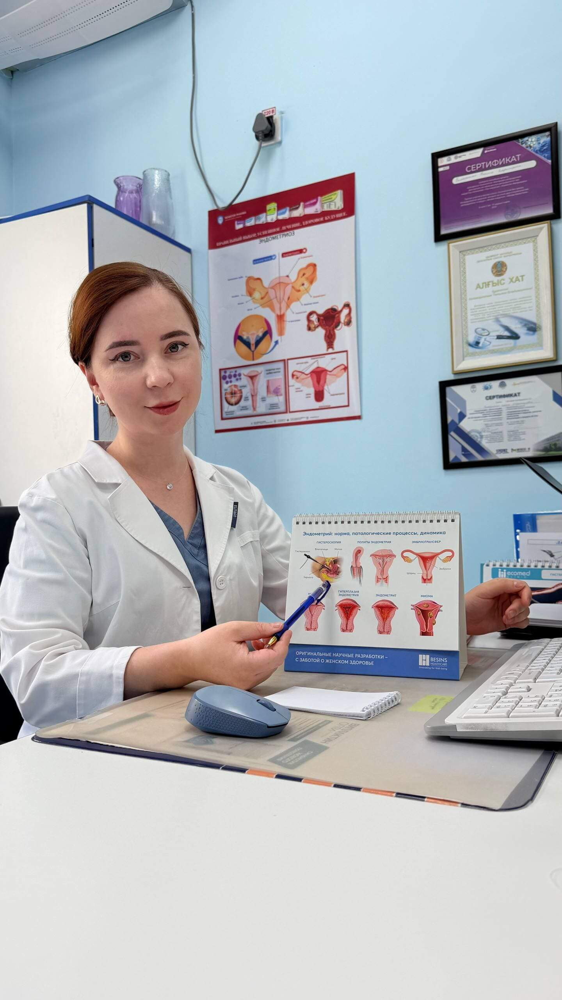

Если вам предложили операцию, поставили диагноз или назначили лечение — приходите. Разберём вместе, без «у меня лучше» и без давления.

⌬В гинекологии много ситуаций, где один врач предлагает операцию, а другой — наблюдение. Где разные клиники называют разные диагнозы по одному и тому же УЗИ. Это нормально: медицина — не математика, но вы имеете право узнать больше одной версии.
Чаще всего ко мне за вторым мнением приходят:
УЗИ, анализы, выписки, протоколы операций. Чем больше — тем точнее разговор.
Свой осмотр, при необходимости — повторное УЗИ прямо на приёме.
Покажу, что я вижу. Объясню, согласна или нет с предложенной тактикой и почему.
С моими выводами и рекомендациями. Можно показать другому врачу для дальнейшей беседы.
Если чего-то нет — ничего страшного. Недостающие исследования назначу прямо на приёме.
Я не работаю на проценте за операцию. Скажу прямо: нужно вмешательство или можно подождать. Решение остаётся за вами.
Подробнее обо мне →Запишитесь — приходите со всеми документами. Разберёмся вместе, без давления.
Записаться